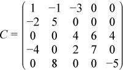

Intel® oneAPI Math Kernel Library Developer Reference - Fortran
The skyline storage format is important for the direct sparse solvers, and it is well suited for Cholesky or LU decomposition when no pivoting is required.
The skyline storage format accepted in Intel® oneAPI Math Kernel Library can store only triangular matrix or triangular part of a matrix. This format is specified by two arrays:values and pointers. The following table describes these arrays:
A scalar array. For a lower triangular matrix it contains the set of elements from each row of the matrix starting from the first non-zero element to and including the diagonal element. For an upper triangular matrix it contains the set of elements from each column of the matrix starting with the first non-zero element down to and including the diagonal element. Encountered zero elements are included in the sets.
An integer array with dimension (m+1), where m is the number of rows for lower triangle (columns for the upper triangle). pointers(i) - pointers(1)+1 gives the index of element in values that is first non-zero element in row (column) i. The value of pointers(m+1) is set to nnz+pointers(1), where nnz is the number of elements in the array values.
For example, consider the matrix C:

The low triangle of the matrix C given above can be stored as follows:
values = ( 1 -2 5 4 -4 0 2 7 8 0 0 -5 ) pointers = ( 1 2 4 5 9 13 )
and the upper triangle of this matrix C can be stored as follows:
values = ( 1 -1 5 -3 0 4 6 7 4 0 -5 ) pointers = ( 1 2 4 7 9 12 )
This storage format is supported by the NIST Sparse BLAS library [Rem05].
Note that the Intel® oneAPI Math Kernel Library Sparse BLAS routines operating with the skyline storage format do not support general matrices.